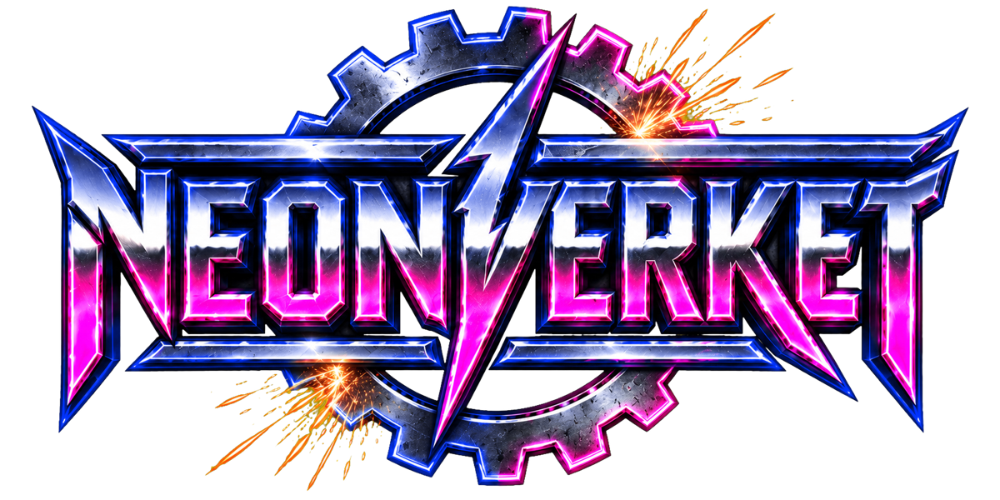

Låtar folk kan sjunga
Vi spelar inget som kräver förkunskaper. Om farbrorn vid bordet längst bak börjar spela luftgitarr har vi gjort vårt jobb.

80-talsrock · Coverband · Pubhörn till festivalscen
Bara låtar ni redan kan texten till. Fixa dansgolvet — vi tar med resten.
Vad ni får
Neonverket är ett gäng vuxna människor som kommit fram till att livet är för kort för att spela något annat än 80-talsrock. Vi spelar för att det är kul — ni bokar oss för att dansgolvet ska fyllas. Alla vinner.
Vi spelar inget som kräver förkunskaper. Om farbrorn vid bordet längst bak börjar spela luftgitarr har vi gjort vårt jobb.
PA, mickar, ljus och en återhållsam mängd rökmaskin. Ni behöver bara ett jordat uttag och plats för bussen.
Bakgrundsmusik under förrätten? Går bra. Full arenavolym när svärmor gått hem? Går ännu bättre. Ni säger till, vi vrider.
Medelåldern gör att vi står på plats redan på eftermiddagen för ett gig som börjar på kvällen. Ni hinner äta middag i lugn och ro.
Så går en kväll till
Ni behöver inte hålla i något. Det här händer ändå, ungefär i den här ordningen.
Vi rullar in tidigt och bär in allt själva. Hellre gott om marginal än stress — ni behöver bara visa var uttaget sitter. Och gärna var kaffet står.
Soundcheck. Ni får höra samma halva låt fem gånger — så vet vi att det låter rätt när rummet väl är fullt av folk. Blir det mat i huset tackar vi gärna ja.
Vi håller oss undan medan ni tar emot gästerna. Scenen står klar, allt är ljudsatt och kvällen kräver inget mer av er.
Set 1. Oftast sitter folk kvar vid borden och lyssnar, och det är precis som det ska vara. Vi spelar låtar de känner igen och håller volymen på samtalsnivå.
Spellistan går i gång så det aldrig blir tyst, och ni hinner fylla på glasen.
Set 2. Här fyller vi golvet. Vi har sparat låtarna som får folk att resa sig och lägger dem på rad — det brukar räcka med ett par innan borden står tomma.
Set 3. Nu är rummet med oss, så det blir mer rock och lite mer volym. Det är oftast nu luftgitarrerna kommer fram.
Extranummer om ni vill ha det. Är festen fortfarande i gång kör vi gärna en stund till — annars packar vi ihop och lämnar lokalen som vi hittade den.
Boka
Två set på 45 minuter med paus emellan. Vi tar med PA och spelar tills personalen tänder...
50-årsfester, bröllop och bygdegårdar. Vi lär oss er låt om ni frågar minst tre veckor innan.
Kickoff, sommarfest, hamnfest eller invigning. Vi står gärna på ett släp om vädret tillåter!
Priset beror på speltid, resväg och om det bjuds på mat. Hör av er så säger vi en siffra samma dag.
Vanliga frågor
Ungefär 4×3 meter. Vi har klämt in oss på mindre, men då får trummisen sitta halvvägs in i garderoben och det märks på humöret.
Precis så högt som ni ber om. Vi har en volymratt och vi vet hur den fungerar. Vid sittande middag håller vi oss under nivån där folk måste ropa åt varandra.
Nej. Det är i huvudsak därför folk stannar kvar på dansgolvet.
Är den från 80-talet och har ett gitarrsolo är svaret nästan alltid ja. Hör av er i god tid så repar vi in den till giget.
Hela Sverige. Vi är vana vid bussen och vi bråkar inte om milen — resan syns bara i offerten.
Gärna. Vi behöver bara tak över utrustningen och en värd som inte lovat oss åska.
Det beror på speltid, avstånd och hur många trappor det är upp till scenen. Skicka datum och plats så får ni ett pris direkt.
Vi ville heta något som lät som en nedlagd industri, fast med bättre ljusskylt. Övriga förslag finns kvar i gruppchatten och stannar där.
Kontakt
Skicka datum, plats och ungefär hur många ni blir. Vi svarar oftast samma kväll, om det inte är repdags.
Vi spelar i hela Sverige — skicka datum och plats så säger vi vad det kostar att få dit oss.